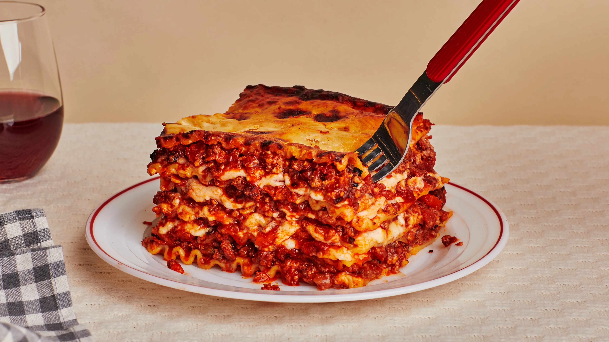

Lasagna Recipe
Home

Description
Lasagna is the ultimate comfort food, layered with rich meat sauce, creamy béchamel, and perfectly baked pasta sheets. It’s a hearty, satisfying dish that brings people together around the table, whether for a weeknight dinner or a special occasion.
This classic Italian favorite balances savory flavors, gooey cheese, and just the right amount of herbs. Once you master the layering technique, it becomes a go-to recipe you’ll want to make again and again.
Ingredients
- 9 lasagna noodles (cooked)
- 1 lb ground beef or Italian sausage
- 1 jar (24 oz) marinara or pasta sauce
- 1 small onion, diced
- 2 cloves garlic, minced
- 15 oz ricotta cheese
- 1 egg
- 2 cups shredded mozzarella cheese
- ½ cup grated Parmesan cheese
- 1 tsp dried basil
- 1 tsp dried oregano
- Salt and pepper to taste
- Olive oil for sautéing
Steps
- Preheat oven to 375°F (190°C).
- Cook lasagna noodles, then drain and set aside.
- In a pan, sauté onion and garlic in olive oil, add ground beef, cook until browned.
- Stir in pasta sauce, season with salt, pepper, oregano, and basil. Simmer for 10 mins.
- In a bowl, mix ricotta, egg, and a bit of Parmesan.
- In a baking dish, layer sauce, noodles, ricotta mix, mozzarella—repeat layers.
- Top with remaining cheese and bake for 25–30 mins until bubbly and golden.
- Let it rest for 10 mins before serving.